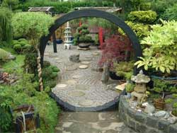

Visit our garden centre today! We have a brand new collection of garden and patio fixtures on display at our store, perfect for all your landscaping needs. Some of the latest arrivals are Zen garden fixtures, Italian garden sculptures, heavy duty sculptured garden containers, and patio furniture.
Landscaping Projects

We can assist with landscaping projects of all shapes and sizes. As our client, you will have access to our pre-made landscaping plans and environmental design software to refine your landscaping plans. All these tools are available at our Vernacular Architecture and Landscape Architecture Department.
While we specialize in Zen garden designs, we also have staff members who are experts in general garden design, including contemporary public parks, home front garden design, waterfront gardens, streets, and walkways. A 30-minute consultation can make a huge difference in refining your landscape design and planning success strategies. Best of all, the first 30-minute consultation is FREE.
Vernacular Architecture and Landscape Architecture Department
You'll be amazed to see rare collections of landscape design materials, including research materials in this part of our store.
Garden Structures
- Gazebos, Cabanas, Greenhouses, and Sheds
- Cement structures, Rock samples, Sand samples, Stepping stone samples, Wall samples
- Bonsai tree collections
- Raised bed wall systems
- Ponds
Site Plans
- Ready made shade garden plans
- Ready made sun garden plans
- Ready made part sun/share plans
- Water garden plans
Distributors
Our products can also be purchased at neighbourhood stores such as these distributors:
There's nothing like a great garden
Want to know the meaning of a great garden? Watch this video!